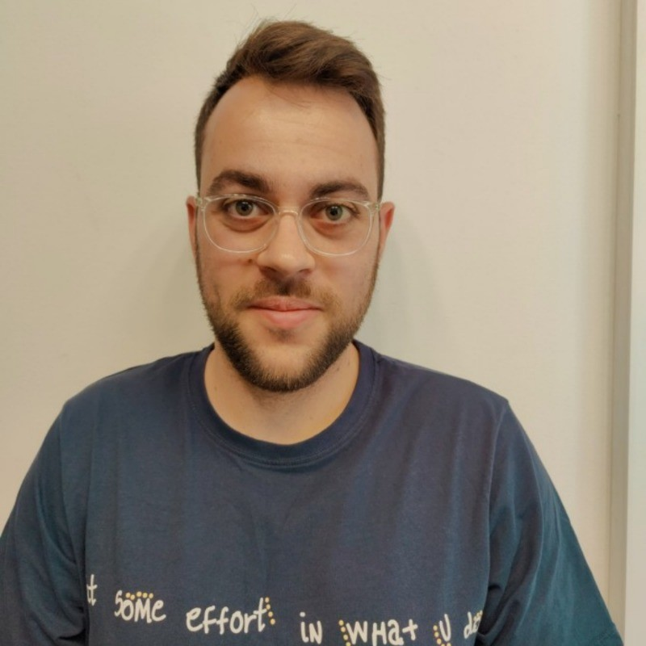

Dor Haboosha

dorhaboosha1234@gmail.com | 0546441362 | Linkedin
Profile
Ambitious and diligent B.Sc student in the last year of studies. Team player with quick learning abilities. I am
friendly, responsible, professional, adaptable to new environments, creative and always committed to excellence.
Has office experience and knowledge in Office (word, excl, power point), outlook, organizational computer
systems, technological knowledge, etc.
Education
Reichman University, Third Year student Dual major B.Sc in Computer Science and B.A in Entrepreneurship | 2021-present
- Main Courses: Machine Learning, Data structure, Algorithm, Software Development Using AI, Object Oriented Programming with C# and .NET
GPA: 85
- Extra Activities -
Participated in RU hackathon-23.
Developers Club - Introduction of Full-Stack.
Mentoring first-year students in an "Intro to Computer Science" course.
BLICH High School, Full Matriculation | 2012-2016
- Matriculation average: 110.44.
- Full Maturity-
10 units in Computers - C#, HTML, javascript, SQL.
5 units in English.
5 units in Physics.
Certificate of Excellence: Social and Study.
Experience
System Integration engineer- Student Position, Celeno (Acqquired by Renesas Electronics) | 2019 - present
As part of my job, I have to check the status of the versions developed in the company. This test
includes A: running tests automation, analysis of test results and production of reports by means of
which it is possible to distinguish whether the version is working properly.
Military Service
Guided Weapons Technician, Israeli Air Force | 2016-2019
As part of my military service, I served as an air-guided weapons technician. I did an Electronics course in
the army and I have an electronics engineer certificate. In my service I was mainly responsible for guided
weapon testing software and then a team leader.
- Direct responsibility for a professional and diverse team.
- Responsible for a large number of tasks, which requires the ability to focus, calmness and correct prioritization.
- The position required an initial response to classified technical/professional problems.
- Professional accompaniment and guidance for new soldiers in the department.
- A position that requires assertiveness, determination and adherence to a tight and aggressive schedule.
Projects
Skills
- C
- JAVA
- Linux
- Python
- HTML
- CSS
- C#
Languages
- Hebrew - Native
- English - High level